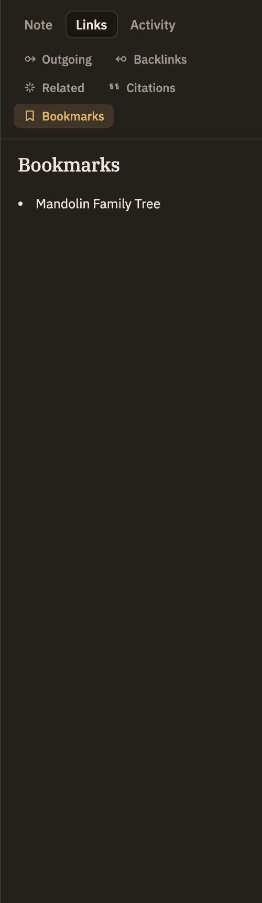

Docs/Right sidebar/Bookmarks
Bookmarks
Bookmarks are quick markers you drop on the notes and passages you want to find again. This panel in the right sidebar gives you a simple list of just the bookmarks that belong to the note you're currently reading — no folders, no clutter.
These are the same bookmarks you see in the Bookmarks panel on the left, where you can organize all of them into folders and search across your whole project. This panel is the focused version: it drops the folders and shows only what's relevant to the note in front of you. Delete a bookmark here and it's gone from the left panel too.
What shows up here
Whenever a note is open, this panel lists every bookmark that points at it. Switch notes and the list updates right away.

What you can do from here
Click a row to jump to what it marks: a section bookmark scrolls you to that heading, and a spot bookmark takes you to that place in the text. Hover a row to reveal its delete button, which removes the bookmark everywhere.
To make a new bookmark, right-click in your note or on its tab and choose Bookmark This Note, Bookmark Section, or Bookmark Line. To rename bookmarks or sort them into folders, use the Bookmarks panel on the left.